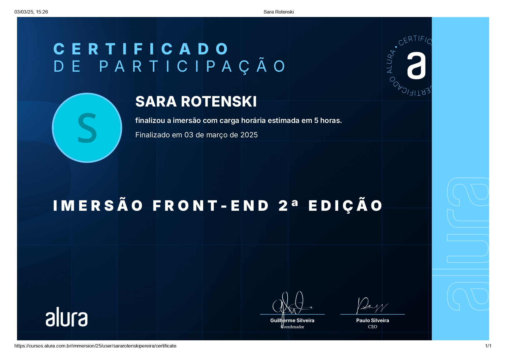

Atividades Extras
Imersão Front-End Alura
Nos dias 27 a 31 de janeiro, participei da Imersão Front-End da plataforma Alura, onde desenvolvi uma página web com o layout inspirado na landing page do Spotify. O objetivo de uma landing page é atrair a atenção dos possíveis clientes aos serviços oferecidos pela empresa. Na imersão, aprendi e pratiquei conceitos relacionados à criação e estilização de cards, boas práticas de organização de arquivos dentro do projeto e o uso de APIs, além de consolidar mais ainda minha base em HTML, CSS e JavaScript. Para visualizar o certificado em tamanho aumentado, basta clicar na imagem ao lado!
